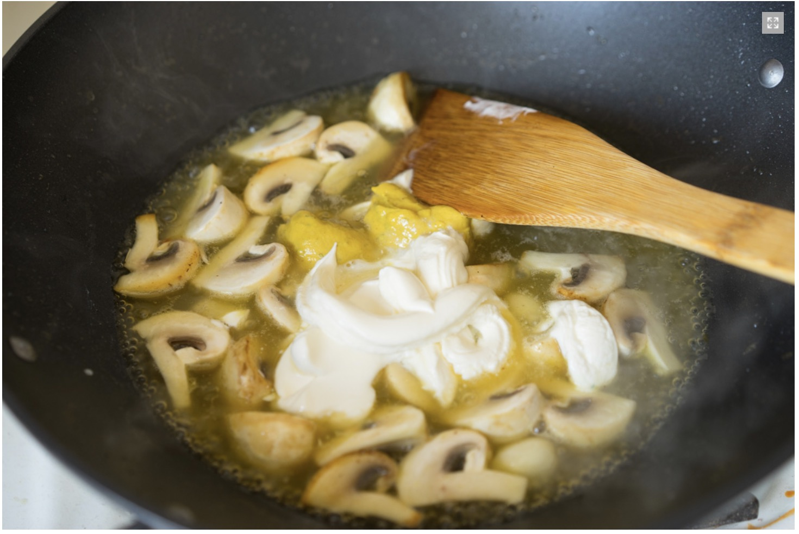

Home
Курица в горчичном соусе с грибами
- Сливочное масло — 30 г
- Оливковое масло — 10 г
- Голени курицы — 6 шт
- Грибы — 150 г
- Чеснок — 3 зубчика
- Белое сухое вино — 100 мл
- Бульон — 230 мл
- Горчица — 2 ст.л.
- Сливки 20% — 80 мл
- Тимьян
Описание:
ШАГ 1
На хорошо прогретой сковороде растапливаем сливочное масло (30 г) и добавляем оливковое (10 г).
ШАГ 2
Курицу (любые части на ваш выбор, я взял 6 голеней) хорошо обтираем бумажным полотенцем, чтобы корочка была вкуснее.
Кладём в сковороду небольшими партиями и обжариваем до появления золотистой корочки. Как только корочка появилась,
убираем партию на тарелку и обжариваем следующую партию.
ШАГ 3
Режем крупно шампиньоны (150 г). Вкус будет ярче, если нарезать гриб сверху вниз под углом. Обжариваем грибы в той
же сковороде.Добавляем три зубчика чеснока.
ШАГ 4
Вливаем белое сухое вино (100 мл). Помимо аромата, оно помогает декарамелизовать сковороду. То есть все пригоревшие
кусочки курицы отстанут от дна. Вводим куриный (или любой другой) бульон (230 мл) и пару столовых ложек хорошей
горчицы.
ШАГ 5
Доводим до кипения и добавляем сливки (20%, 80 мл). Можете сметаной заменить, но мне так невкусно.

Готовим соус минут 10-15, чтобы он слегка загустел. На этом этапе добавляете перец и соль. Переливаете соус в
жаропрочную форму. Керамика здесь будет эстетичнее и удобнее. Размер подберите такой, чтобы соус наполнил хотя бы 3
см. Сверху аккуратно укладываете голени красивой корочкой вверх. Я ещё раз перчу и посыпаю листики тимьяна. Он с
горчицей наиболее идеален, можете взять сухой. Из других трав — шалфей.
ШАГ 6
Ставим в духовку, разогретую до 180 градусов и готовим минут 15-20. Всё зависит от размера кусков курицы. Во время
обжарки мы её точно не доготовили, поэтому и ставим в духовку. Проверять очень просто — ножом прокалываете самую
толстую часть. Если сок прозрачный выходит — курица готова.